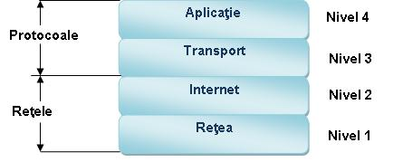
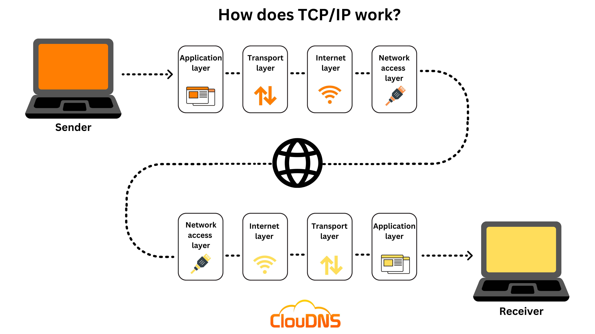
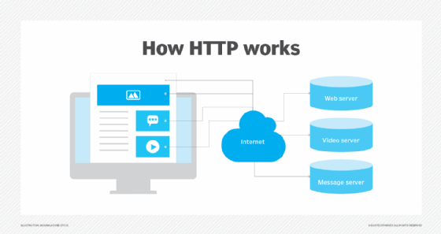

Protocoale Principale
Protocoalele de rețea sunt seturile de reguli care permit dispozitivelor să comunice între ele într-un mod standardizat și eficient. Acestea funcționează ca un limbaj comun, asigurând că toate dispozitivele, indiferent de producător sau sistem de operare, pot schimba date în siguranță.
În era internetului modern, protocoalele precum TCP/IP, HTTP și DNS formează coloana vertebrală a comunicațiilor digitale, permițând funcționarea serviciilor pe care le folosim zilnic, de la email și browsing web până la streaming și jocuri online.

Protocoalele sunt regulile care permit calculatoarelor să comunice între ele.
TCP/IP

- Protocol de bază al internetului
- Asigură transmisia datelor
- Folosit pentru majoritatea conexiunilor
HTTP

- Protocol pentru web
- Transfer pagini web
- Comunicare browser-server
DNS

- Sistem de nume de domenii
- Traduce numele în adrese IP
- Esențial pentru navigare